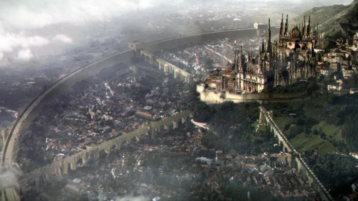

Dark Souls Lore
A Era dos Anciões e o Primeiro Fogo
No início, o mundo era um lugar indistinto, envolto em névoas e governado por dragões imortais e arcáicos. Não havia vida nem morte, apenas uma eternidade cinzenta.
Então, surgiu o Primeiro Fogo, trazendo consigo a disparidade: luz e trevas, vida e morte, calor e frio. Desse fogo, surgiram as Almas dos Lordes, que concederam poder a quatro seres:

Juntos, eles desafiaram os dragões. Gwyn usou seus raios para destruir suas escamas imortais, a Bruxa de Izalith incendiou o céu, Nito espalhou doenças, e os humanos (descendentes do Pygmy) lutaram como guerreiros. Assim, começou a Era do Fogo.
A Ascensão e a Queda de Lordran
Gwyn estabeleceu seu reino, Lordran, e dividiu parte de sua Alma para criar seus cavaleiros e deuses. A Bruxa de Izalith tentou recriar o Primeiro Fogo, mas falhou, transformando-se no Demônio do Caos e corrompendo sua terra. Nito permaneceu em seu reino de mortos, e os humanos foram amaldiçoados com as Marca Negra (Dark Sign), ligando-os ao Fogo.
Com o tempo, o Fogo começou a se apagar. Temendo o retorno da escuridão (e da Era dos Humanos, pois o Pygmy havia profetizado que "o fogo se extinguiria, e só restaria a escuridão"), Gwyn fez um sacrifício: ele queimou sua própria alma no Fogo Primordial, prolongando artificialmente a Era do Fogo. Essa decisão criou a Maldição dos Não-Mortos – humanos que, ao morrer, voltam à vida, mas perdem sua sanidade.
O Mundo que o Jogador Encontra
Quando o jogador acorda no Asilo dos Não-Mortos, Lordran já está em ruínas. Os deuses fugiram ou se corromperam, os antigos heróis viraram monstros, e o Fogo está prestes a se extinguir de vez. O dever do jogador é decidir: reacender o Fogo (como Gwyn), permitir que a escuridão tome conta (usurpar o Fogo para os humanos) ou buscar um caminho diferente.
O mundo é um eco de glórias passadas, repleto de tragédias e personagens que perderam seus propósitos. Tudo gira em torno da natureza cíclica do mundo – será que a chama deve sempre ser reacesa, ou é hora de algo novo surgir?
Praise the Sun! ☀️